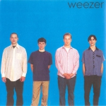
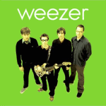

The No Ripcord Guide to... Weezer
Not many bands have packed as much drama into their careers as Weezer. In less than twenty years, they’ve gone from critically-acclaimed power-pop darlings, to public enemy number one, to education-led hiatus, to triumphant comeback, to obscurity, and everywhere in between. Unsurprisingly, this makes them difficult to keep up with and you may not be familiar with all the records that make up their back catalogue. Luckily, the No Ripcord team is here with the low-down on each of their studio albums, so the depth of your Weezer knowledge need never embarrass you in public again.
Weezer (AKA The Blue Album) – 1994
When I was a kid, staying up way past my bedtime listening to this album, I genuinely had a little cry as Only In Dreams wound down. Not because of the fierce duel guitar solo, nor the sombre bass line, nor the unbearable sadness in Rivers Cuomo’s delivery – rather, I was upset that my search for flawless album had come to an end at the tender age of 12, effectively rendering all other music pointless. Seriously. It’s always tricky to write about music you hold in such esteem, no less in under 200 words – but in the interest of keeping it short: this album is lightning in a bottle, one of the most fun rock records ever made. Cuomo is a master alchemist, turning stories that detail awkwardness, heartache and abandonment into singalong anthems with a deft knack that rivals even Cobain at his peak. The music is a riot, all squealing solos and storming riffs that blindside even on the fiftieth listen. For a band to arrive this fully formed on their debut is just unreal. Ten expertly crafted pop songs, forty minutes of escapism, one album of perfection. Gabriel Szatan
 Pinkerton – 1996
Pinkerton – 1996
Had it been Weezer’s debut album, perhaps Pinkerton would have received the plaudits it deserved. Critics initially bemoaned the rough production and admittedly, it could have done with some of The Blue Album’s overall sheen in places. Even the band themselves were down on it until recent years, refusing to play any of the tracks live. But those willing to scratch a little deeper discovered an album of immense depth and ingenuity, arguably more so than the debut. Tired Of Sex introduces the album perfectly, a ferocious fuzzy bass riff and power chord stomp laying the foundations for Rivers Cuomo’s screams and yelps about the unbearable rock star life of having too much sex (oh, imagine the agony). El Scorcho is a wonky acoustic-based lament about unrequited love. And if there’s a more exquisitely-crafted hook in all of pop music than the chorus to Pink Triangle, I’m yet to hear it. Joel Stanier
Weezer (AKA The Green Album) – 2001
Looking back at it in hindsight, The Green Album is unquestionably Weezer’s most calculated move in their illustrious career – after an incredibly successful reunion tour, it came to be as a result of them being fully aware that the demand was present. And though it broke the hearts of suburban kids everywhere, with its hopelessly romantic outlook instead of self-deprecating acrimony and regret, it brought back an equally sprightly set of songs that didn’t stray too far apart from their so-called classic period. It does give the impression of going through the motions, seeing as it follows a same-y mid-tempo pace that binds them together perhaps too cohesively, but its steady guitar crunch seamlessly breezes through without a bated breath. Besides Cuomo’s huffs and groans in the alt-radio leaning Hash Pipe, it actually displays Cuomo at his most sterile and unemotional, letting most of the raw guitar riffs speak for themselves. That affectless, monotonal quality was proof of Weezer coming back on their own terms – crisp, economical and incredibly tuneful, albeit surprisingly constrained. Perhaps not the crowning achievement of their career, but it did give them the confidence to keep going at it without concerning themselves with lukewarm reviews or the detractions of their most fervent fanbase. At the end of the day, everyone was hungry for more. Juan Edgardo Rodriguez
Maladroit – 2002
Maladroit seems to have been largely airbrushed from history which is more than a little unfair because, while a little patchy quality-wise, it has its moments to match any other Weezer record. Keep Fishin’ is a bouncy, sugar-coated wonder (with a promo video almost as good as Buddy Holly) and the understated riffing and harmonies on the verses of Burndt Jamb are addictive. As Maladroit progresses, the songs become shorter and the well of inspiration begins to run dry. The latter third of the album is largely forgettable – the fuzz-coated blast of December aside – which can make its running time seem much longer than it actually is. However, if you have Maladroit in your collection and haven’t listened to it in a while, dig it out and give it a spin, chances are it’s better than you remember. If you only buy one Weezer album, don’t make it this one, but there is enough in Maladroit to make it worth your time. Joe Rivers
Make Believe – 2005
If there’s one main criticism you can level at Make Believe, it’s that it’s just kind of... dumb. Beverly Hills shows some initial promise, but as soon as the chorus of “Beverly Hills, that’s where I want to be / Beverly Hills, rolling like a celebrity” kicks in, your inner cheeseometer starts to reach perilous levels. This isn’t helped one iota by the thoroughly 80’s This Is Such A Pity, and not even the promisingly-titled We Are All On Drugs can save things from there. There’s a weirdly sentimental feel to many of the tracks; a world away from the we’re-half-joking mentality that helped make their earlier records so much fun. Joel Stanier
 Weezer (AKA The Red Album) – 2008
Weezer (AKA The Red Album) – 2008
The Red Album is where Rivers Cuomo decided to show his appreciation for Wings by releasing his version of At the Speed of Sound, i.e., this is the one where everyone gets to contribute in the spirit of democracy and band harmony. And this being an American band, of course it’s heavily weighted to the top 1%, Cuomo himself. Similar to McCartney’s failed experiment, it ends up being about half good, with Rivers contributing some of his finest tunes in a while alongside some rather bland power-pop forays. Fortunately, it’s heavily front-loaded so you can listen to the first five or six songs and be done with it. Pork And Beans and Troublemaker are vintage Cuomo and The Greatest Man That Ever Lived is both funny and fascinating. You might even like Heart Songs if you go in for sentimental, on-the-nose balladeering. This reviewer demurs. Alan Shulman
 Raditude – 2009
Raditude – 2009
Chuck Klosterman once called Rivers Cuomo the most honest songwriter in rock. Not because he had anything exceptionally important to say, but because he simply writes about whatever he wants. He writes whatever’s in his head at the time. The Blue Album and Pinkerton classically dissect young alienation because that’s what he was thinking about at the time. Make Believe exists because he was into houses in Beverly Hills. Raditude exists because… because he felt like it should for some reason. There are few connecting themes; it’s just basic pop silliness. Whether it’s partying or teenage love, Rivers was thinking about it. It’s not a very good record. It continues the lackluster streak they’ve been on since Pinkerton. After all that, I still enjoy it. I think it’s some sort of obnoxiously catchy nostalgia. I endlessly played (If You’re Wondering If I Want You To) I Want You Too on Rock Band in sophomore year of college. I heard the song all summer long while painting houses with one of my closest friends, driving from job to job and listening to an endless radio cycle of Weezer, MGMT and Kings of Leon. It was crammed down my throat so often that I submitted. It went through a full evolution, from hatred to love, within the span of a few weeks. I still have a sneaking feeling that it sucks, but I’ve shoved it down pretty hard. Andrew Baer
Hurley – 2010
Late-career Weezer is not an acclaimed body of work, but the most recent studio release is perhaps their strongest, front-to-back, in almost a decade. It sees Rivers Cuomo adopt a more reflective tone at times, especially on storming opener Memories – the subsequent namesake tour in 2010/11 saw the band tackle their first two records in their entirety, a marked shift from the usual blacklisting that Pinkerton received live. Still, the trademark silliness largely abounds: see the daft sex/socks puns that are littered throughout Where’s My Sex?, or the Viva La Vida cover in the bonus tracks. The music may be technically unspectacular, a meat ‘n potatoes mix of sturdy backline and chugging riffs, but packs a hefty punch and bears similarity to the muscular tones of Maladroit. Overall, Hurley is the sound of a band comfortable as they approach 20 years of existence, with a renewed sense of enjoyment. It may not be big or clever, but it’s a lot of fun and if you’re in the market for an unchallenging rock record, this will do nicely. Gabriel Szatan
Agree? Disagree? Want to chip in with something about Death To False Metal or one of the non-studio records? Add your two cents using the Disqus form below.
14 March, 2012 - 22:42 — No Ripcord Staff